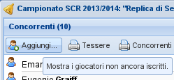
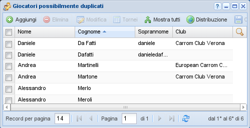

Gestione giocatori¶
I giocatori sono chiaramente i protagonisti principali del sistema: fino alla versione 3
potevano anche assumere il ruolo di utenti autenticati, ma da SoL 4 in poi quella
funzione è svolta invece dagli utenti. Solo alcuni utenti hanno il
permesso di manipolare l'elenco dei giocatori presenti nel database.
Inserimento e modifica¶
Nome, cognome e soprannome¶
Il nome e il cognome di un giocatore sono dati obbligatori, mentre il
soprannome è facoltativo e viene usato per disambiguare gli omonimi. Quando vengono
memorizzate le modifiche SoL esegue una verifica sui nomi già presenti nel database, per
evitare doppioni, per quanto possibile.
Suggerimento
Generalmente il soprannome del giocatore viene visualizzato nell'interfaccia e nelle
stampe. Quando il nomignolo viene usato per distinguere giocatori omonimi, si
consiglia di usarne uno composto dal cognome più la prima lettera del nome, o
viceversa, magari eliminando gli eventuali spazi o apostrofi: SoL riconosce questi
casi e omette il soprannome, al fine di non appesantire inutilmente le
visualizzazioni e le stampe.
In altre parole, per il giocatore “Mario De Rossi”, nei seguenti casi il soprannome non verrà mostrato:
mariode rossiderossimderossimde rossiderossimde rossimmarioddmario
Sesso, data di nascita, nazionalità, club, lingua e email¶
I campi sesso, data di nascita, nazionalità e club sono opzionali e vengono usati per produrre vari tipi di classifica, mentre la lingua e l'email per eventuali messaggi inviati per posta elettronica.
Cittadinanza¶
Generalmente per poter partecipare a tornei internazionali è richiesta la cittadinanza per il paese per cui si gioca, oltre all'iscrizione alla federazione del medesimo paese.
Riservatezza¶
Il campo riservatezza accordata è una esplicita attestazione che il giocatore ha
concesso il permesso di risultare riconoscibile nelle viste pubbliche (cioè, accessibili da
visitatori anonimi), in primis nell'interfaccia LIT.
La logica usata per stabilire se il nome del giocatore debba apparire in chiaro piuttosto che offuscato è la seguente:
se ha esplicitamente fatto la sua scelta, il nome, il cognome, il sesso e il ritratto del giocatore saranno mostrati in chiaro solo in caso positivo, altrimenti oscurati;
al contrario, quando non l'abbia espressa,
SoLassume implicitamente il caso positivo se il giocatore abbia partecipato a qualsiasi torneo dopo il 1° gennaio 2020: questo è supportato dalla decisione presa dalla ECC che chiunque desideri giocare nei tornei organizzati dai club affiliati debba accordare il permesso che i suoi dati possano essere usati nei siti web relativi.
Nota
Per ovvie ragioni, il nome completo del giocatore appare in chiaro nell'interfaccia di gestione dei tornei, anche quando abbia negato il consenso.
Responsabile¶
Il responsabile generalmente indica l'utente che ha inserito quel particolare nominativo: i dati del giocatore potranno essere modificati solo da lui (oltre che dall'amministratore del sistema.).
Ritratto¶
Al giocatore può essere assegnata un'immagine (nei formati .png, .jpg o .gif)
utilizzata come ritratto nella sua pagina personale. Sebbene venga automaticamente
scalata alla bisogna, si raccomanda di usare immagini di dimensioni ragionevoli (vedi nota sul
campo stemma dei club).
Iscrizione al torneo¶

Iscrizione altri giocatori¶
Quando si sta preparando un nuovo torneo e si procede con l'iscrizione dei giocatori, dall'apposita voce aggiungi… nel menu del Pannello concorrenti della Gestione torneo si accede alla maschera dei giocatori, da dove è possibile selezionare uno o più giocatori (possibilmente estendendo la selezione usando i classici shift-clic e ctrl-clic).
La maschera viene filtrata automaticamente per mostrare solo i giocatori non ancora iscritti al torneo in questione. Inoltre di default vengono mostrati solo i giocatori che hanno partecipato ad almeno un evento organizzato dallo stesso club del torneo corrente nel corso dell'ultimo anno: c'è un pulsante Mostra tutti i giocatori in basso a destra che consente di passare da questa visualizzazione a quella completa e viceversa.
Per aggiungere i giocatori selezionati al torneo si possono sia trascinare nel pannello sinistro della gestione torneo, o più semplicemente si può usare il pulsante Inserisci giocatori selezionati, se presente.
Doppia registrazione di un giocatore¶

Giocatori potenzialmente duplicati¶
Talvolta un giocatore viene inserito nel database due (o più) volte con nomi leggermente diversi, per errore o incomprensione. Il caso tipico è quello di un particolare giocatore che partecipa a diversi tornei: essendo identificato in maniera non univoca, i suoi risultati non possono essere riassunti correttamente nella classifica del campionato, dove appare più volte con le sue varie identità.
In questa situazione è necessario eseguire una correzione ai dati, sostituendo le varie identità con una unica, in tutti i tornei dove ha partecipato. Infine, le identità sbagliate devono essere cancellate dal database.
Questo può essere fatto selezionando le identità sbagliate e trascinandole sopra quella giusta mantenendo premuto il tasto ALT. È necessario ovviamente fare in modo che tutti i giocatori interessati siano visibili allo stesso momento applicando un filtro opportuno, eventualmente inserendo un marcatore temporaneo (tipo **) nel cognome dei giocatori su cui si intende operare e filtrando su quello.
L'applicazione verificherà che l'operazione non generi alcun conflitto, segnalando un errore ad esempio quando in uno stesso torneo risulti presente sia il nome giusto che uno di quelli sbagliati.
Per facilitare il compito, può tornare comoda la voce Duplicati nel menu, che applica un filtro particolare all'elenco dei giocatori evidenziando quelli che potrebbero essere dei duplicati: in sostanza vengono confrontati i nomi e cognomi dei giocatori e vengono mostrati solo i giocatori che hanno nomi molto simili tra loro, tipicamente perché differiscono solo per poche lettere.
Avvertimento
Non eseguire questa operazione mentre si sta preparando un nuovo torneo, perché i dati modificati e non ancora memorizzati potrebbero facilmente risultare non più corretti: la finestra di gestione del torneo deve essere chiusa!